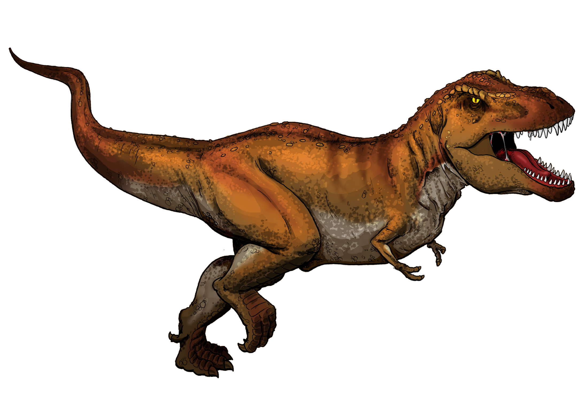
T. Rex: The Tyrant King
Meet one of the mightiest dinosaurs that ever lived

Meet one of the mightiest dinosaurs that ever lived
Say hello to Tyrannosaurus rex! Its name means 'tyrant lizard king.' T. rex lived about 66 million years ago, long before there were any people. It was one of the last dinosaurs to walk the Earth.
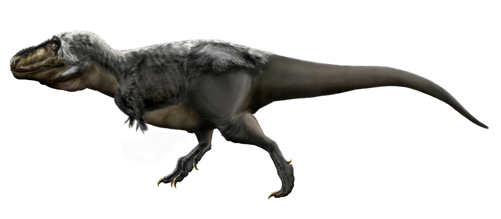
T. rex was ENORMOUS. It stretched about 40 feet from nose to tail -- longer than a school bus! It stood as tall as a one-story building. And it weighed as much as an African elephant.
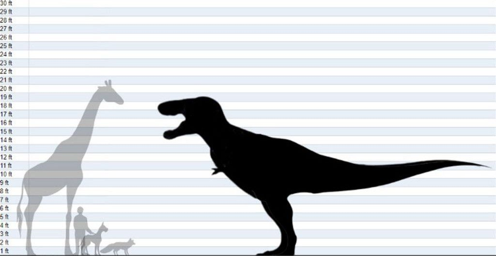
Look at that skull! T. rex had one of the most powerful bites of any animal that ever lived. Its jaws could crunch right through bone. It had about 60 teeth, and the biggest ones were as long as bananas!
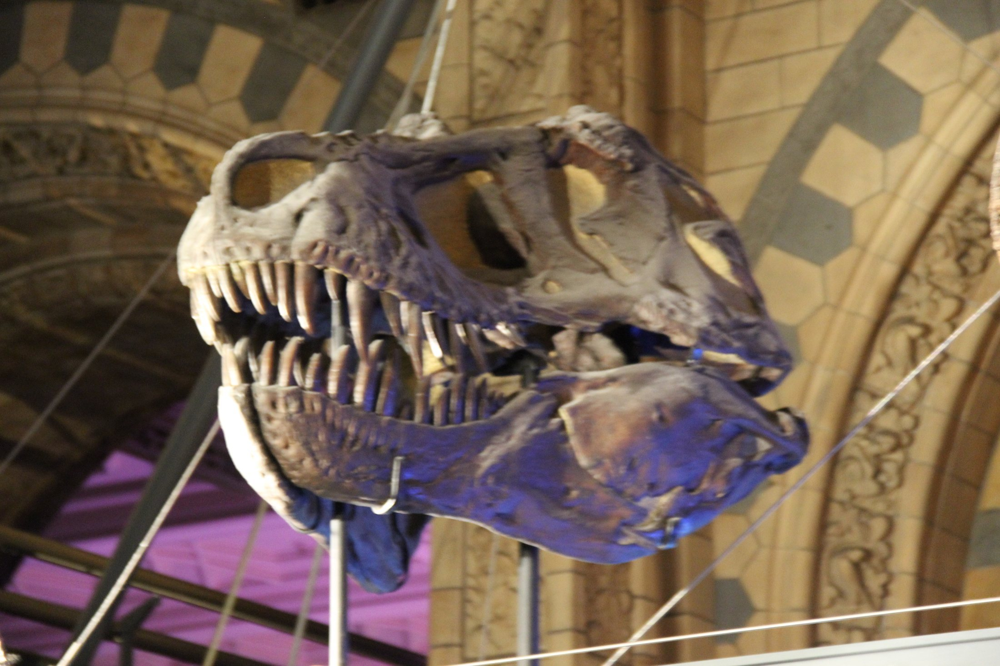
Each tooth was thick and sharp with tiny ridges, like a steak knife. When a tooth broke or fell out, a new one grew in its place. T. rex never had to worry about losing a tooth!
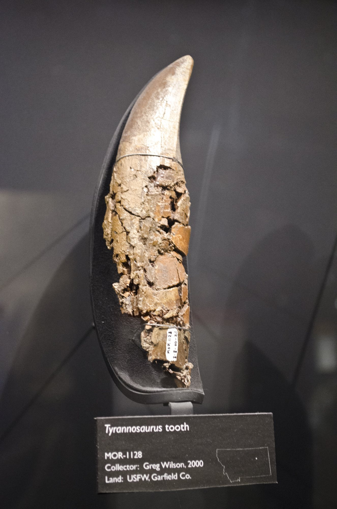
Now look at those tiny arms! They seem silly on such a giant body, right? But those little arms were actually very strong. Scientists think T. rex may have used them to push itself up off the ground or to hold onto food.
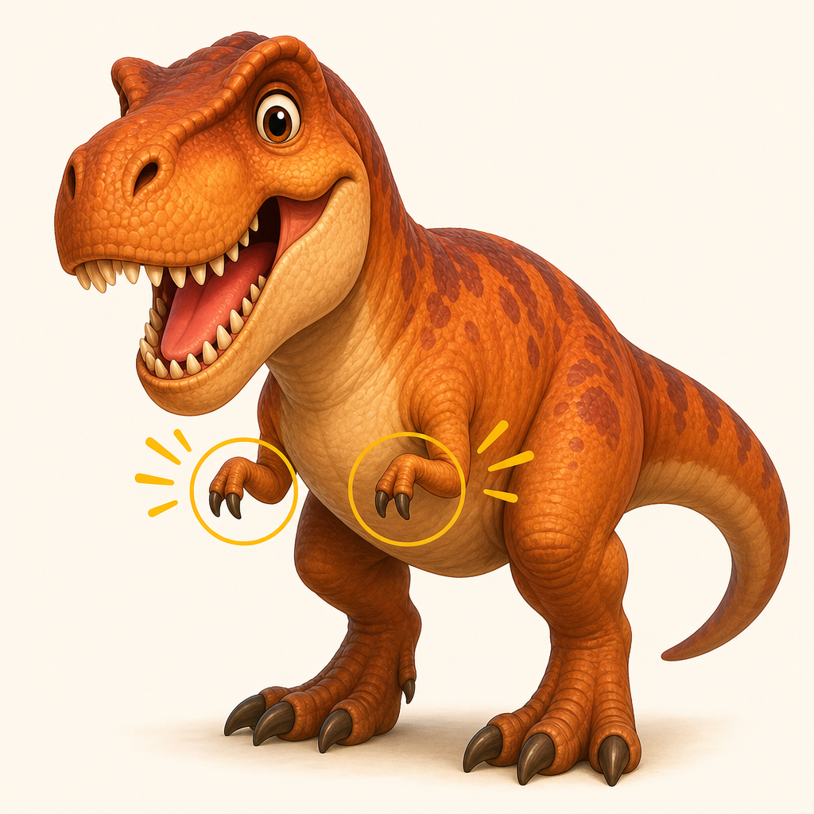
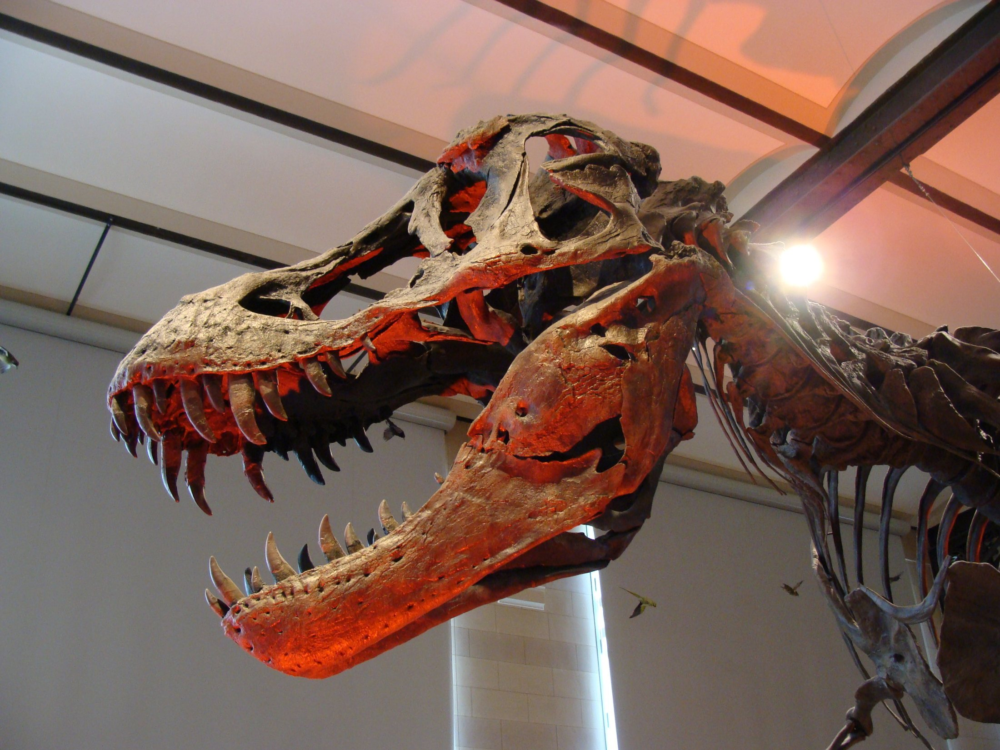
Was T. rex a hunter or did it just eat animals that were already dead? Both! T. rex had amazing eyesight and could see far away, just like you can. It also had a super-powered nose that could sniff out food from very far away.
Baby T. rex looked very different from the grown-ups. They were only about the size of a small turkey! And they may have been covered in soft, fuzzy feathers to keep warm. As they grew bigger, the feathers went away.
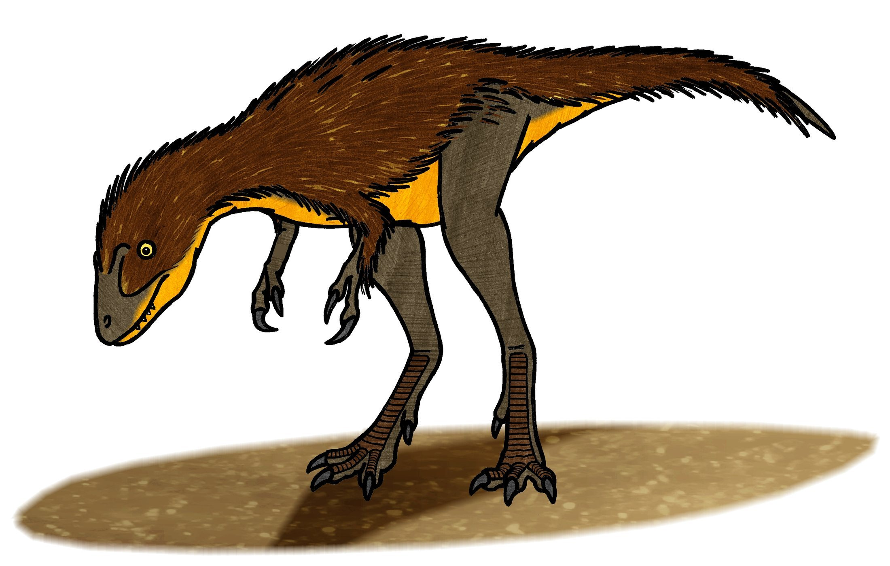
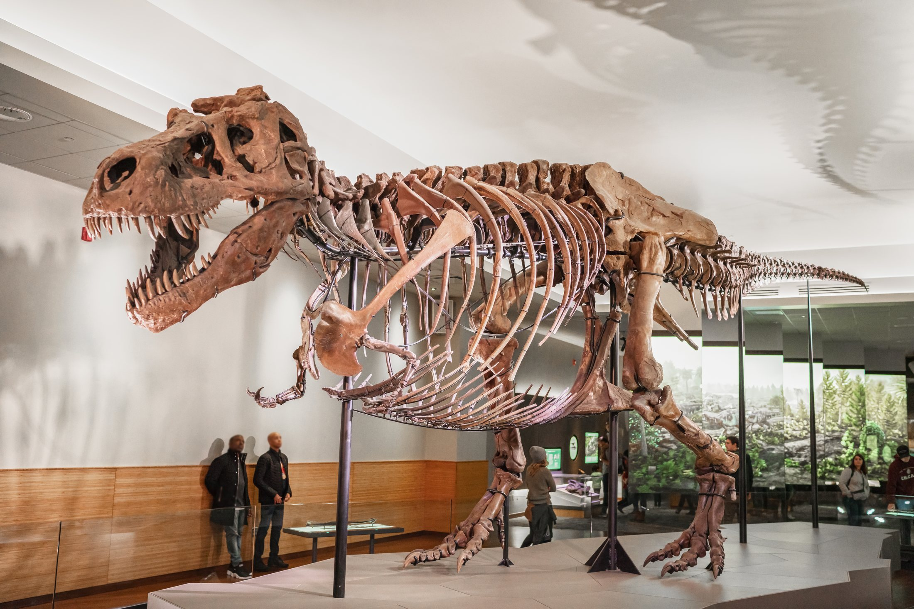
How do we know so much about T. rex? People found its bones! In 1990, a fossil hunter named Sue Hendrickson discovered the most complete T. rex skeleton ever found. It took six people 17 days to dig it out of the ground!
You can visit Sue at the Field Museum in Chicago. Standing next to those giant bones, you can see just how big T. rex really was. The skeleton is 90 percent complete -- almost every bone is there!
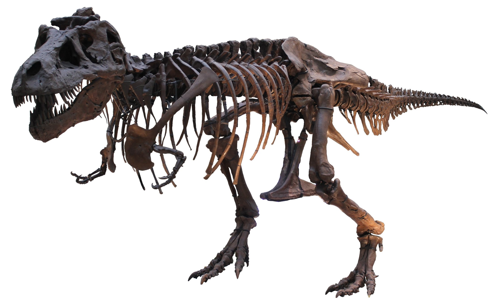
About 66 million years ago, a giant asteroid smashed into Earth. Dust and smoke filled the sky and blocked the sunlight. T. rex and all the other big dinosaurs disappeared forever.
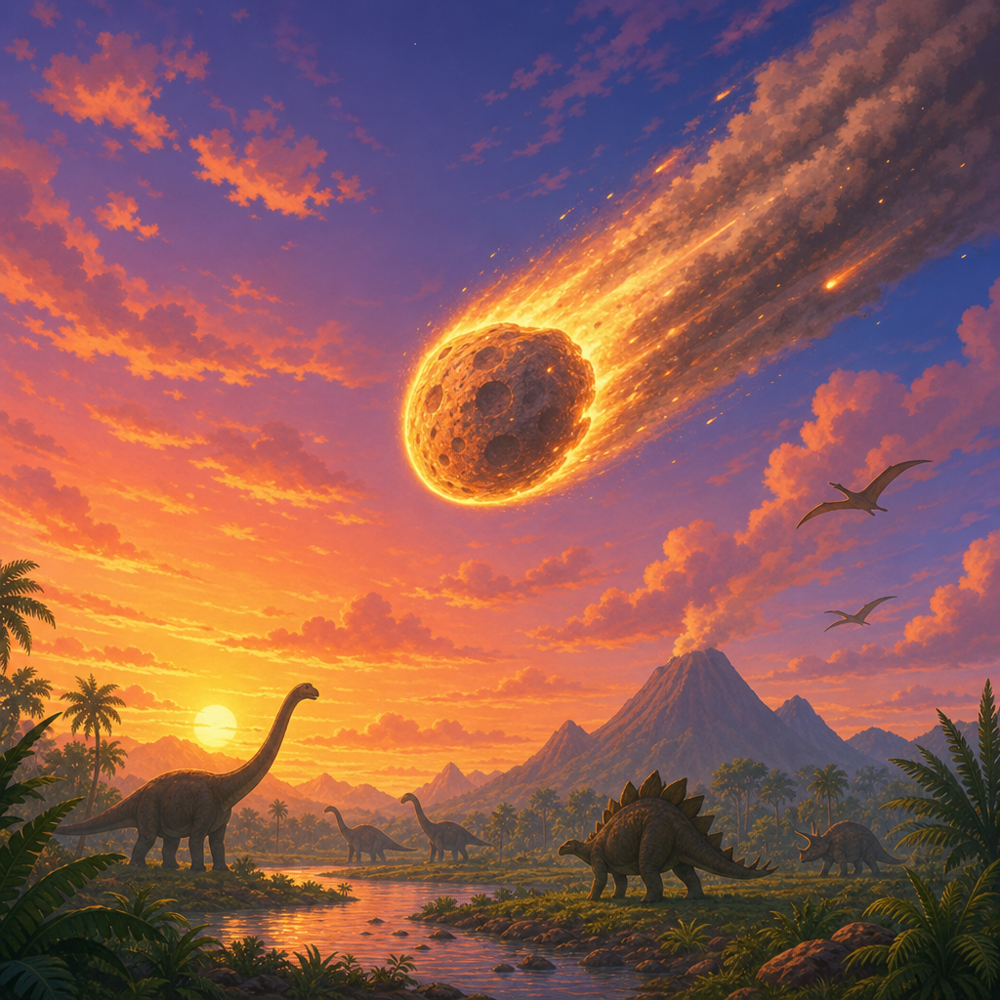
But some small feathered dinosaurs survived -- and became the birds we see today! So next time you see a bird, remember: it is a tiny relative of the mighty T. rex.
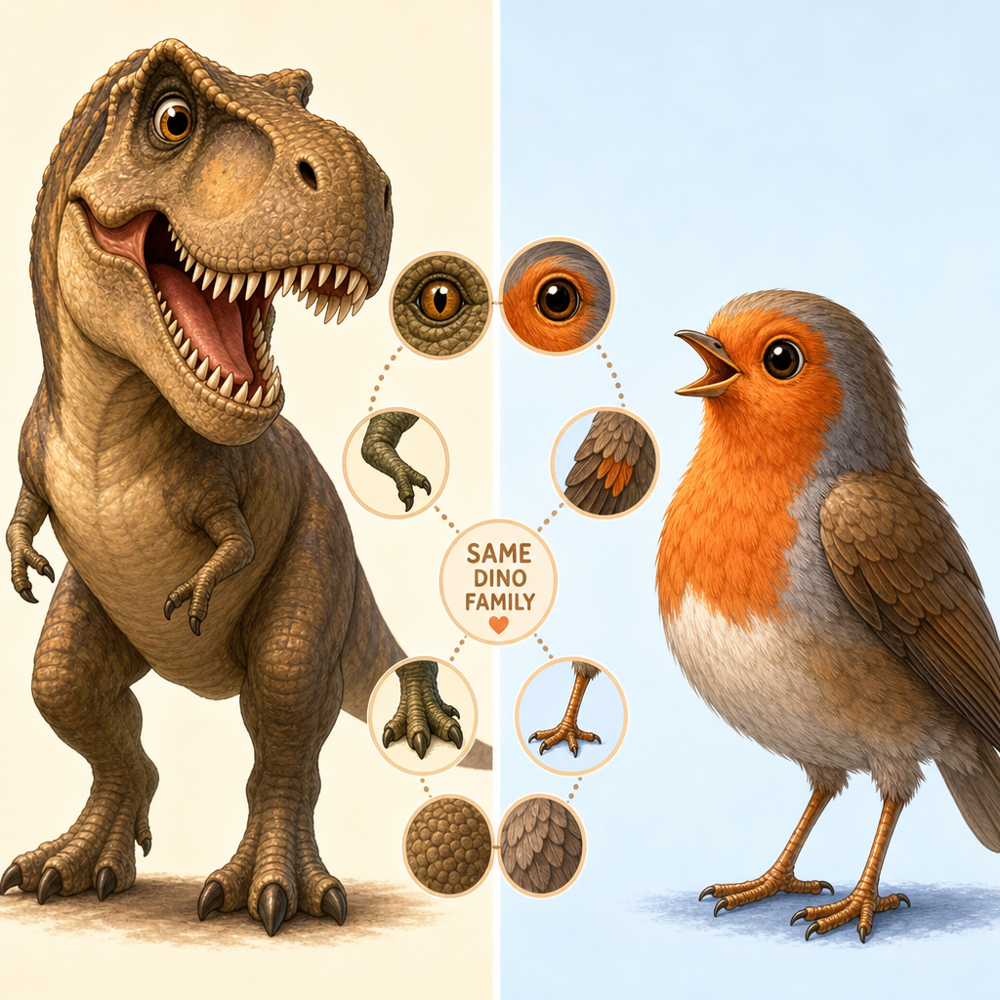